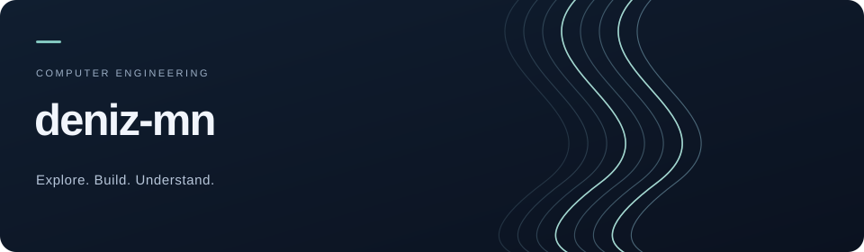
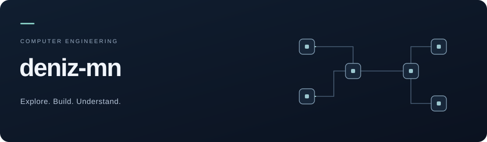

۱. خطوط ریاضی — پیشنهاد من
تغییر آرام روشنایی روی منحنیها؛ ساده، دانشگاهی و بدون تأکید روی یک گرایش خاص.

۲. ماژولهای متصل
حرکت آهستهٔ سیگنال میان ماژولها؛ اشارهای عمومی به ساختن، ارتباط و حل مسئله در مهندسی کامپیوتر.

متن معرفی مشترک
I'm a seventh-semester Computer Engineering undergraduate with project experience across different areas of computing, including artificial intelligence and software development. I enjoy connecting ideas, exploring new problems, and turning what I learn into working projects.